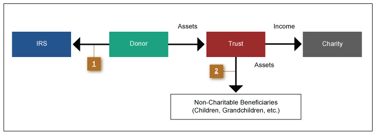

Thus far, the gifting techniques presented have made the donor or some other person the income beneficiary, and the charity the remainder beneficiary. But it is possible to do exactly the reverse through a charitable lead trust. In this case, the charity enjoys the income from the property for a period of time, and distributes the property to the beneficiary(ies) when the trust terminates.
The following features are found in the trust document of a charitable lead trust:

The charitable lead trust is an excellent way to support charities while reducing the gift taxes on the portion that will go to remainder beneficiaries. For example, with an IRS required discount rate of 2.0% (the rate in January 2016), a $1,000,000 contribution to a 10-year CLAT, paying 7% annually (as valued when the trust was funded) to a charity, will result in a present value calculation of $628,782 as the value of the annuity going to the charity, and the balance of $371,218 as the present value of the gift that will ultimately go to the remainder beneficiaries.
If the trust is instead structured as a 15-year CLAT, then the present value of the gift to the charity increases to $899,451 and the value of the gift to the remainder beneficiaries decreases to $100,549. Structure it as an 17-year CLAT, and the present value of the gift to the remainder beneficiaries declines to zero.
This technique can result in substantial estate and gift tax savings for affluent clients, and are especially powerful when the IRS Discount rate is low. The reason for this is that a low discount rate maximizes the present value of the income stream going to the charity, which in turn lessens the present value of the gift being made to the remainder beneficiaries.